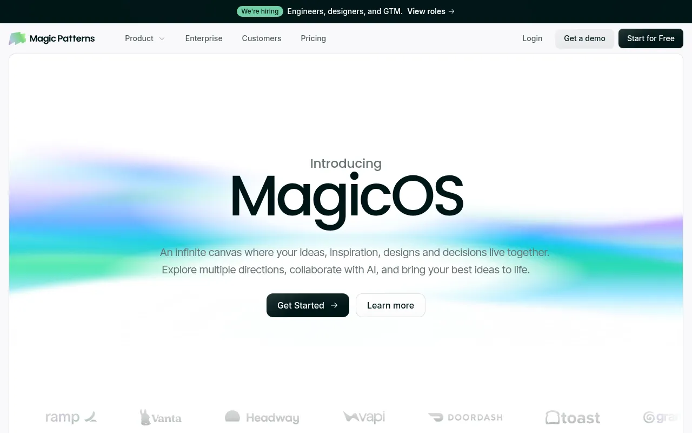
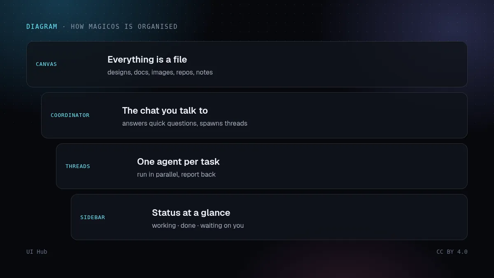

Magic Patterns 起初是面向产品团队的「提示生成界面」工具（以 YC W23 身份在 Hacker News 发布，刻意只做前端）。2026 年 10 月 13 日它推出 MagicOS，把产品从「一个对话 + 一个预览」重组为一块无限画布。


在五个聊天标签页里探索五个方向的人都懂这种痛：每个标签都要重复需求，被否掉的方案找不回来，也忘了当初为什么选了某一个。MagicOS 把 PRD、参考图、变体和被否掉的方向并排放着，协调者能读懂画布，你需要解释的就少了。它还支持实时语音，并提供 MCP 服务，让 Claude、Cursor 或 Codex 可以根据画布上的内容写代码。
Magic Patterns 自己的文档说，只做一个页面或快速原型时，单个设计仍然更合适；发布时 Plan Mode、Controls、分叉、合并、行内评论等功能也只在单个设计里有。我们的看法：探索多的工作用画布，专注打磨用单个设计。